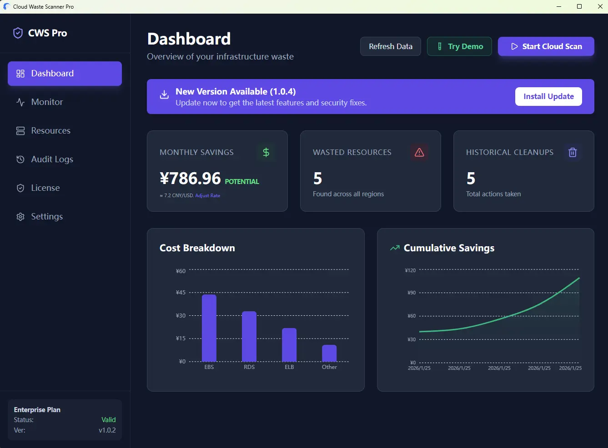
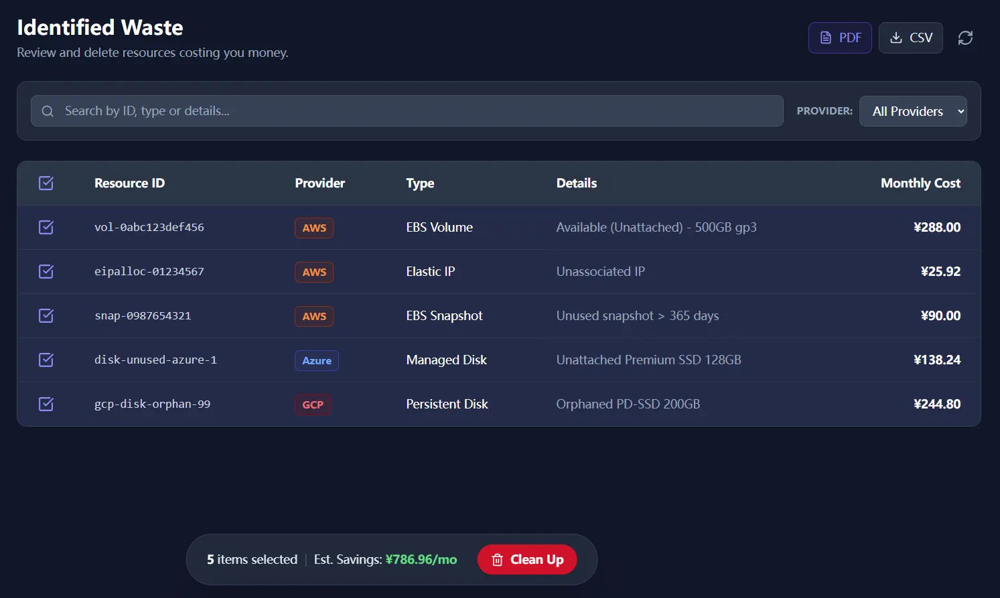
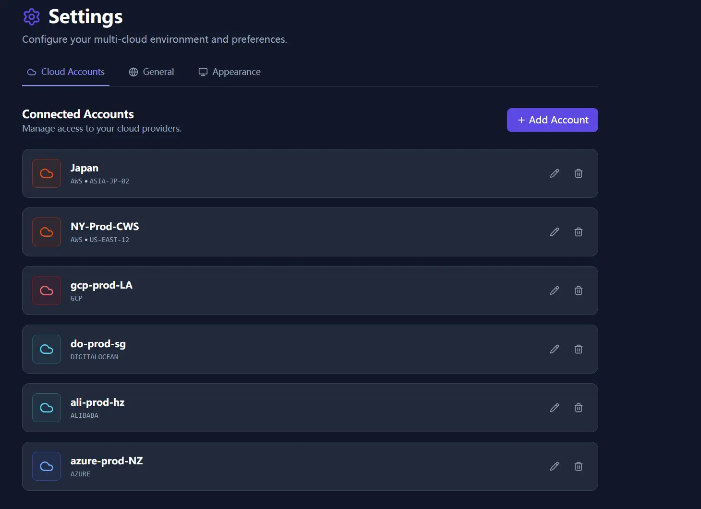

The first release bar was shaped by a near miss in a cleanup log review: better visibility, safer actions, and no credential upload.
Cloud bills rarely explode in one shot. They leak through forgotten resources, oversized machines, and cleanup paths that nobody quite trusts. v1.0 was built for teams stuck between heavyweight SaaS and brittle internal scripts.
1. Visibility: surface the waste that usually stays buried
The initial monitor design focused on speed of comprehension. Operators needed a page that would show which resources looked quiet, which looked healthy, and where to start the review.

From the start, the product leaned toward behavior-based review. The goal was to find resources that were technically alive and financially pointless.
2. Action: review before anything destructive happens
Finding waste is only half the job. Cleanup is where trust breaks. v1.0 therefore used a two-step path: scan first, review the candidate list, then expose the cleanup action only after the operator had made an explicit selection.

3. Coverage and custody: one app, local credentials
Multi-cloud complexity was already obvious, so the first release supported multiple providers from one app. Just as important, credentials stayed on the device. The product was not built around uploading keys to a vendor-managed backend.

For how this baseline expanded in later releases, continue with v2 Launch Global and the operations refinement in Customer-First Shipping Feedback Loop.